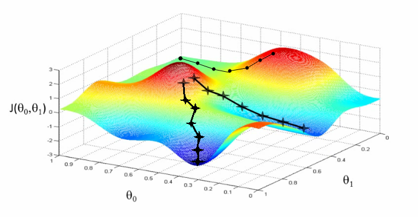
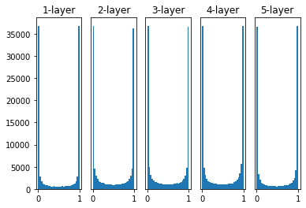
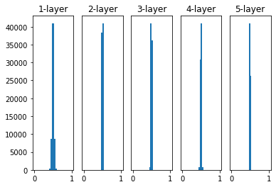
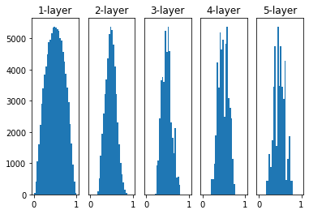
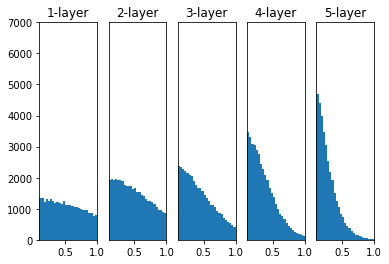
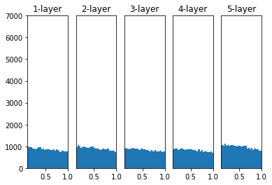

Related to: Fundamentals
개요
신경망 모델의 목적은 손실(Loss)을 최소화하는 것으로, 이를 위해 경사 하강법으로 파라미터를 최적화합니다. 학습 시작 시 가중치를 어떻게 초기화하느냐에 따라 학습 속도와 수렴 방향이 크게 달라집니다.

핵심 개념
Zero Initialization
- 모든 파라미터 값을 0으로 놓고 시작하면 되지 않을까?라고 생각할 수 있습니다.
- 그러나 파라미터의 값이 모두 같다면 역전파(Back propagation)를 통해서 갱신하더라도 모두 같은 값으로 변하게됩니다.
- 신경망 노드의 파라미터가 모두 동일하다면 여러 개의 노드로 신경망을 구성하는 의미가 사라집니다.
Random Initialization
-
파라미터에 다른 값을 부여하기 위해서 가장 쉽게 생각해 볼 수 있는 방법은 확률분포를 사용하는 것입니다.
-
Std1, Sigmoid를 사용한 경우

- 0, 1에 가까운 값만 출력
- 활성화 값이 0, 1에 가까울 때, Sigmoid 기준 기울기가 0에 가까워지므로 학습이 거의 일어나지 않게 되어 Gradient Vanishing 현상 발생
-
Std 0.01, Sigmoid를 사용한 경우

- 대부분의 출력 값이 0.5 주변에 위치하며, 따라서 Gradient Vanishing 현상을 방지할 수 있음
- 출력 값이 비슷하면 노드를 여러개 구성하는 의미가 사라지게 됨
Xavier Initialization - 사비에르 초기화
-
사비에르 글로로트(Xavier Glorot)가 제안
-
고정된 표준편차를 사용하지 않음, 은닉층의 노드 수에 맞춰 표준편차를 선정
-
적용 후

-
Code
# TensorFlow tf.keras.initializers.GlorotNormal() # PyTorch torch.nn.init.xavier_normal_()
He Initialization - 히 초기화
-
카이밍 히(Kaiming He)가 제안
-
ReLU함수를 활성화 함수로 사용할 때 추천되는 초기화 방법
-
적용 전

-
적용 후

-
Code
# TensorFlow tf.keras.initializers.HeNormal() # PyTorch torch.nn.init.kaiming_normal_()
관련 개념
- Regularization - Batch normalization — 배치 정규화도 Gradient Vanishing 완화에 기여
- Basic Optimizer & Adam(Adaptive Moment Esimation) — 가중치 초기화 이후 최적화 알고리즘
- RNN 내부에서 sigmoid 또는 tanh를 쓰는 이유 — RNN에서의 발산 방지 전략
참조
https://yngie-c.github.io/deep learning/2020/03/17/parameter_init/
https://supermemi.tistory.com/entry/CNN-가중치-초기화-Weight-Initialization-PyTorch-Code